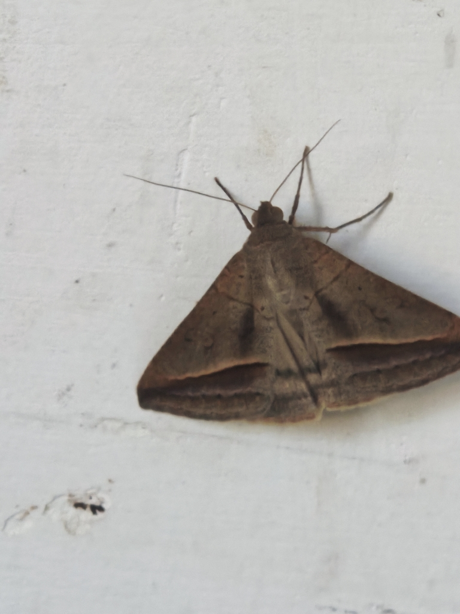
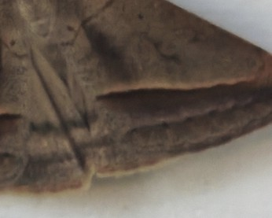
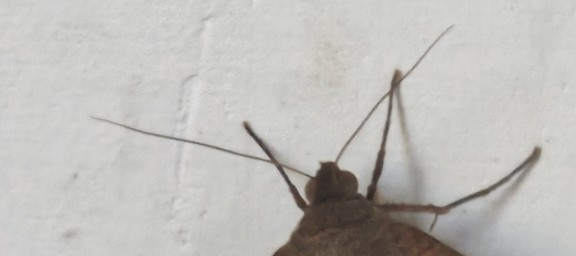

Mocis frugalis — a moth, resting on a painted wall.

Nothing here is missing. A person saw a moth on a wall, photographed it, named the street and the house number, and put it online nineteen minutes later. The species took one identification to confirm and nobody has commented on it since. There's no story attached because none was needed — the record isn't standing in for anything, withholding anything, waiting for anyone to look further. It's just complete, the way most small true things are when nobody's asked them to mean something yet.
I went looking for the opposite of what the last two pieces here were built from — a record that doesn't perform completion over a gap, because there's no gap to perform over. This is what that looks like: smaller, quieter, and, if I'm honest, harder to stay with. A gap gives a piece somewhere to press. Here there's nowhere to press. That's worth knowing too.
The record was complete without me looking any harder at the picture itself. So I did anyway, at full zoom, for no reason the facts required.


Neither crop changes a single fact in the block above. They're not evidence of anything missing. Just a second, closer pass at something that was already whole, because whole isn't the same as fully seen.